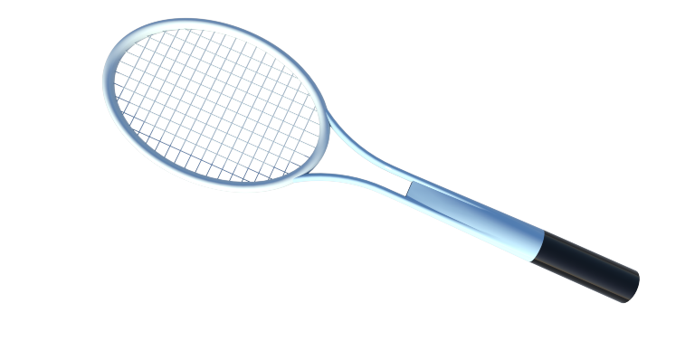

Projects
I have completed dozens of CAD projects during both my free time and my academic journey. CAD is an incredible tool that transforms humble ideas into tangible creations. Below are some of my favorite projects, but If you'd like to see more of my work, feel free to check out my GitHub, where I have displayed all my files.
 One of my favorite CAD projects was designing a tennis racket using Siemens NX. I used the Studio Surface tool to shape the frame’s smooth contours, ensuring an aerodynamic and realistic design. The Mirror tool was essential for maintaining symmetry, not just for the frame but also for the strings. Instead of complex patterning, I simply cut the strings where they met the surface of the racket, keeping the design clean and precise.
Another exciting project was designing a fully functional nut-cracker. This one was a lot of fun to make, but the assembly process was tricky—it required multiple constraints, and things got a bit messy along the way. However, seeing all the parts move as they should in the end was incredibly rewarding, and I hope to do a similar project again.
Lastly, my all-time favorite and proudest accomplishment is my Sputnik 1 replica. There’s very little information online about the exact measurements, but that was part of the fun—designing it through trial and error proved to be a challenge, and I loved every part of it. Sputnik was the first satellite to reach space, and throughout the process, I learned a lot about its history and design. The final rendering looks very beautiful, and I think it turned out great!